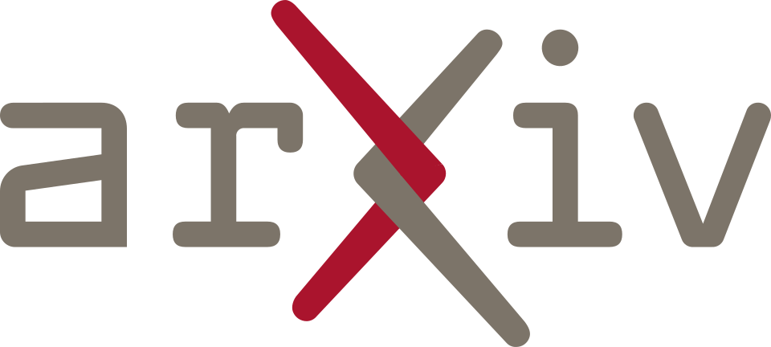
Publications
arXiv
2026
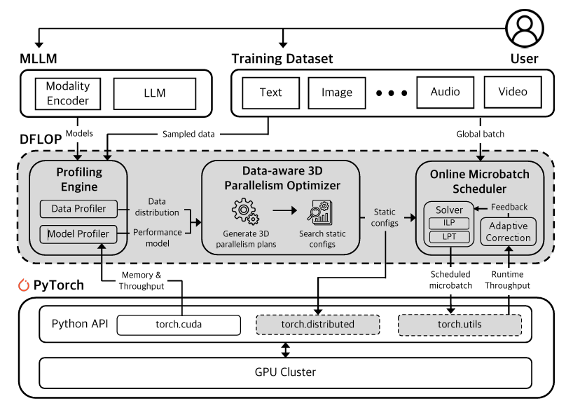


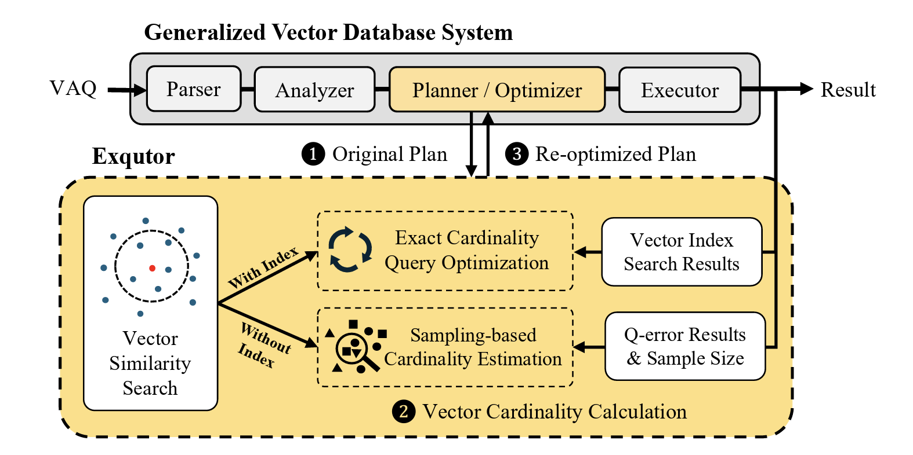
2025
2024
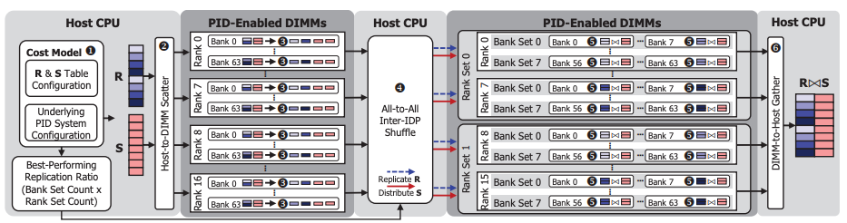
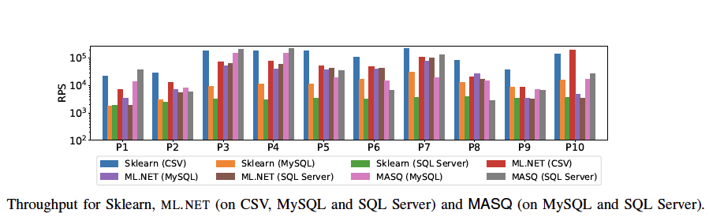
2023
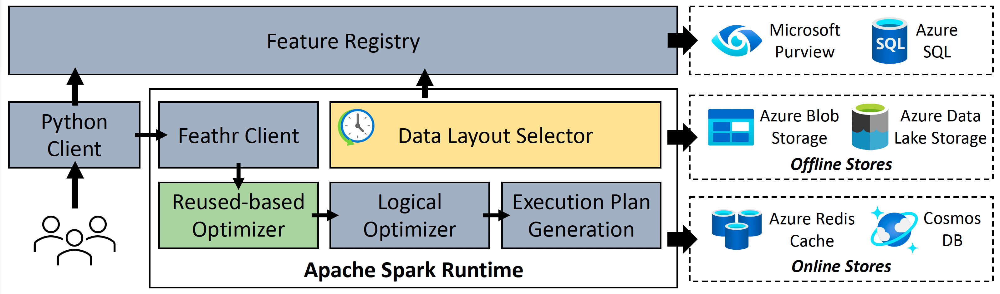
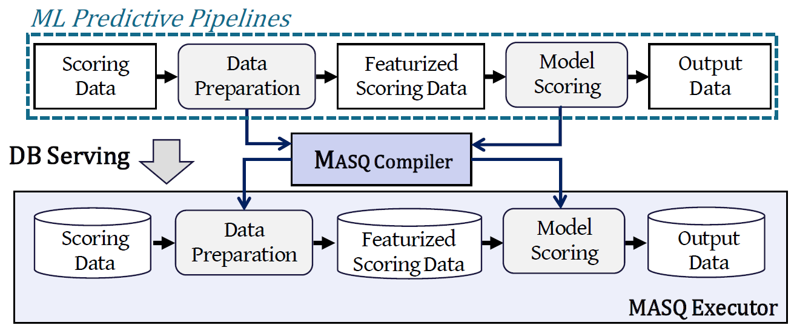
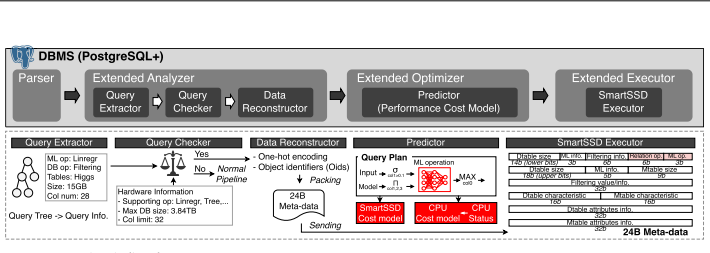
2022
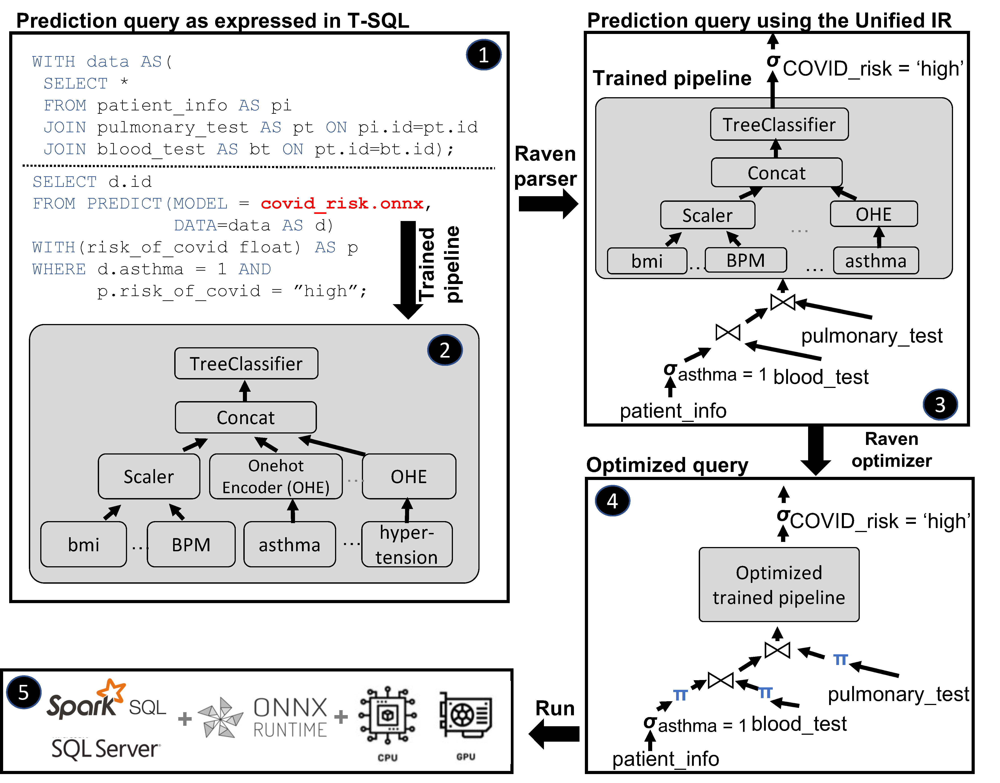
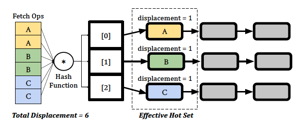
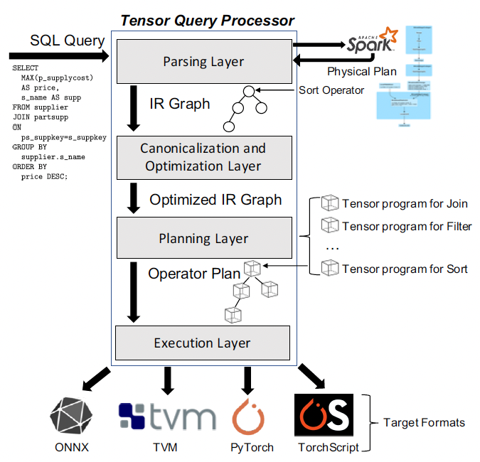
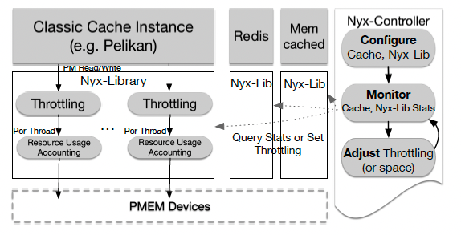
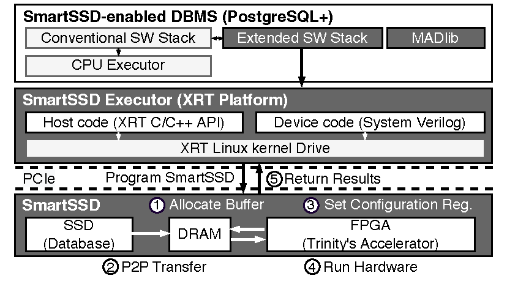
2021
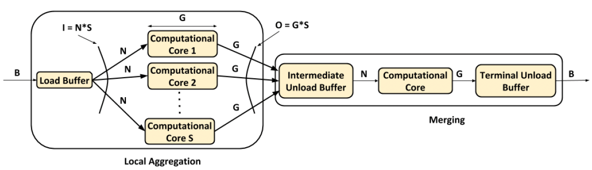
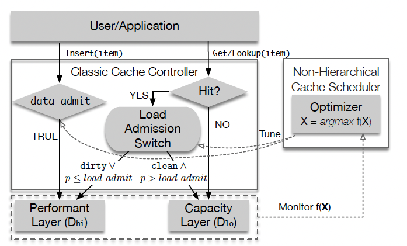
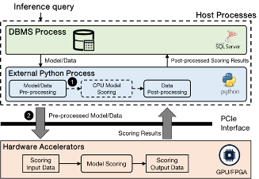
2020
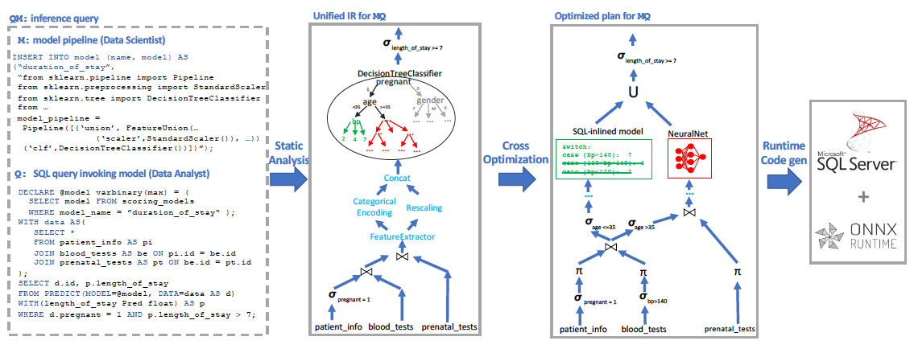
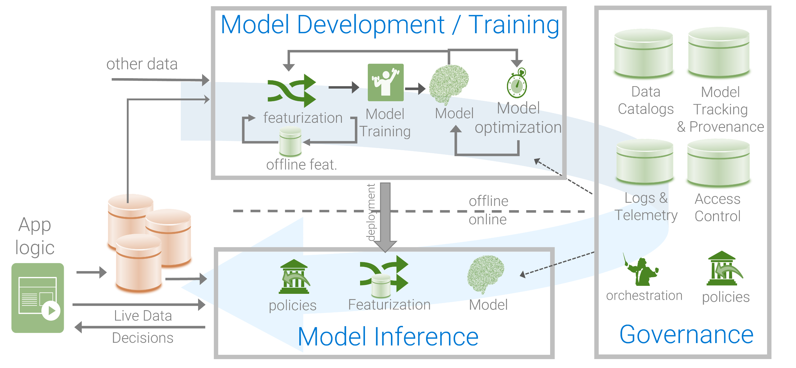
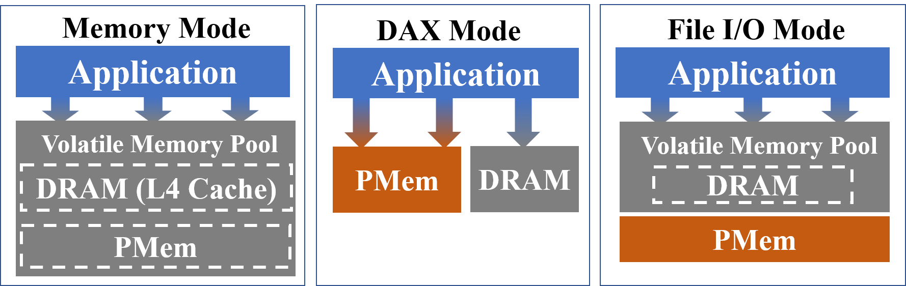
2019
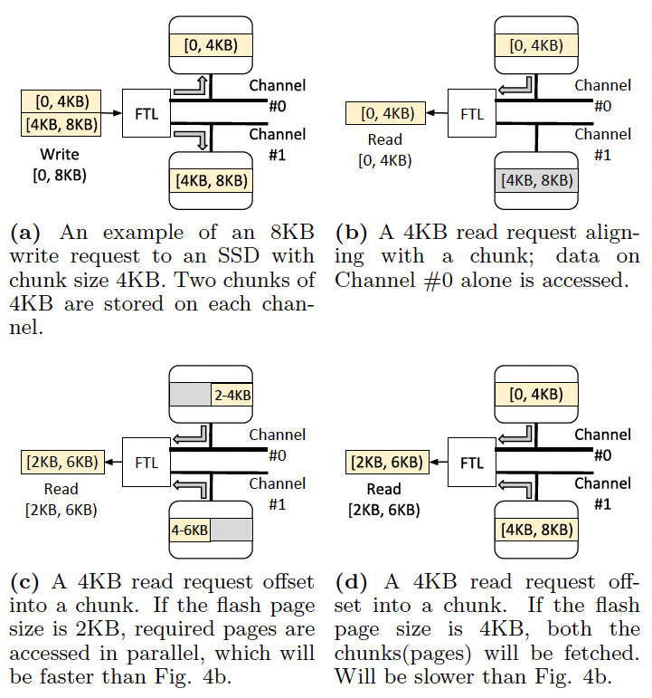
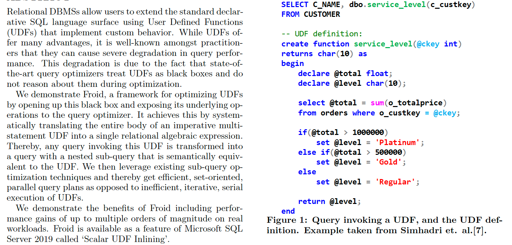
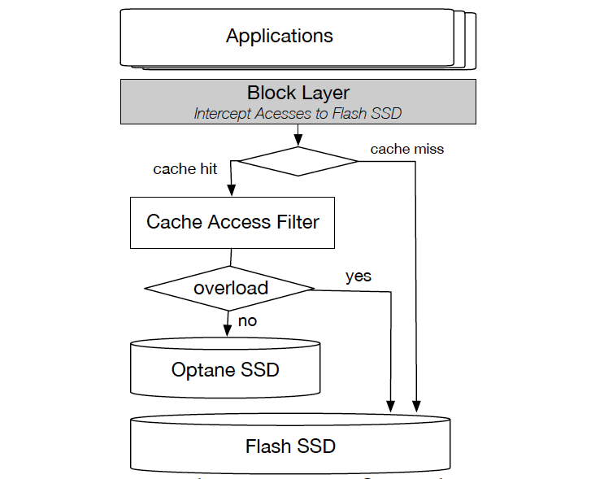
Before 2019
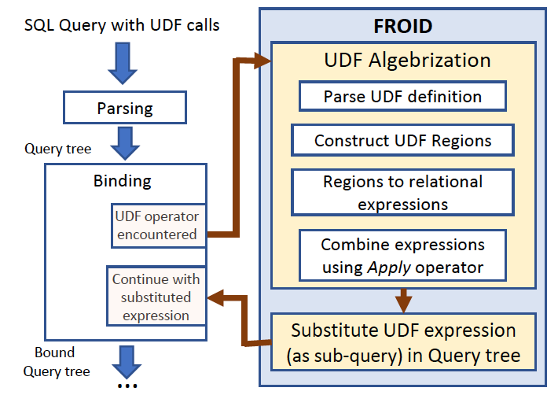
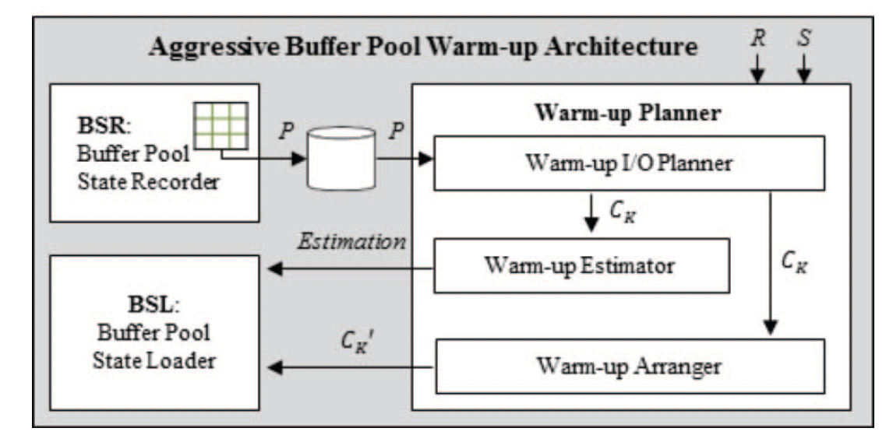
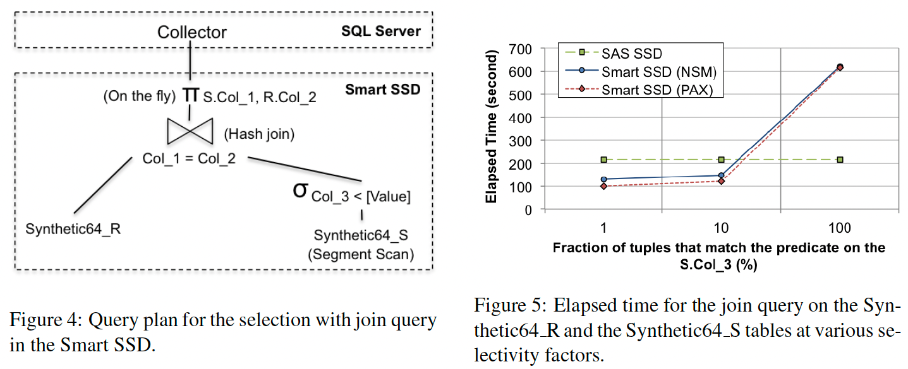
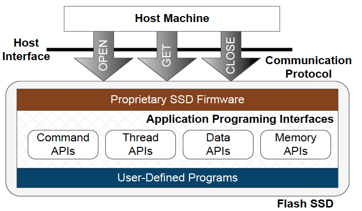
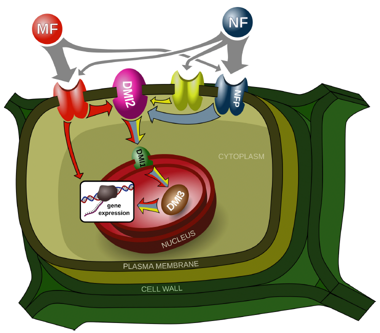
Conference / Journal Information
Conference Schedule
Join BDAI Lab
Masters/Ph.D Students
BDAI Lab is accepting Masters/Ph.D students. Please send your CV and transcript to Prof. Park.
Undergraduate Internship
BDAI Lab has multiple openings for undergraduate research internship. Please send your CV and transcript to Prof. Park.
Post-Doctoral Researcher
BDAI Lab is recruiting post-doctoral researchers. Please send your CV and transcript to Prof. Park.
Contact Infomation
Engineering Hall4 D802/D706, 50 Yonsei-ro, Seodaemun-gu, Seoul, Republic of Korea (03722)
Get Direction